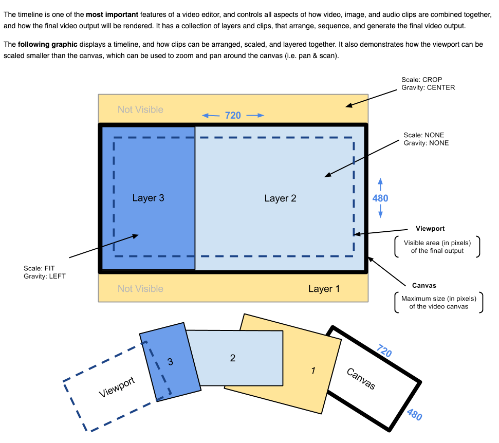
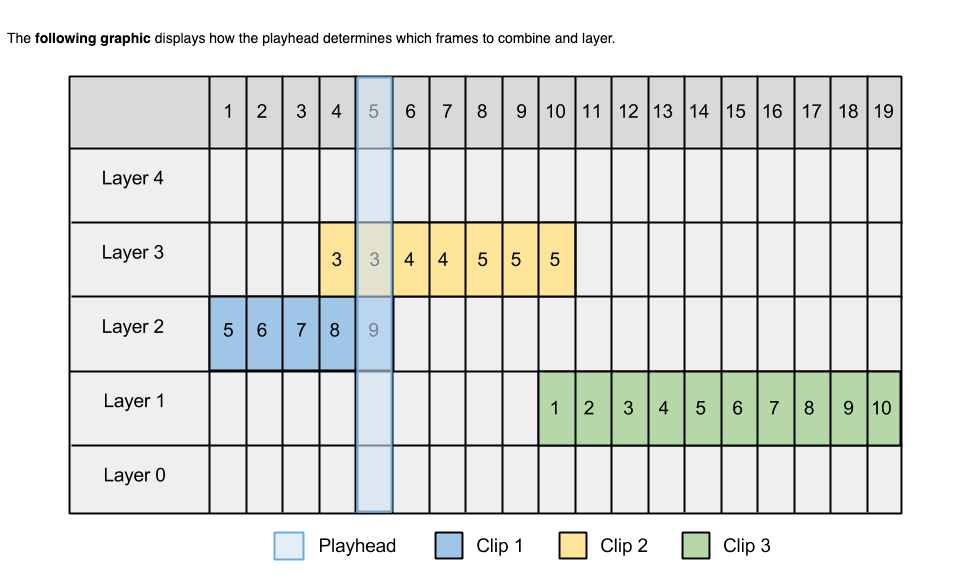

在《libopenshot-基本概念以及播放器实现》一文中，其中一个示例是两个clip操作的展示，我们实现了在视频画面之上显示一张静态图片。这个例子算是Timeline和Clip的基本使用，本文就来分析一下这两个类的实现。
Timeline, Clip中的Frame合成
两个Clip的Frame合成过程
以两个clip操作代码为例：
1
2
3
4
5
6
7
8
9
10
11
12
13
14
15
16
17
18
19
20
21
22
23
24
25
26
27
28
29
30
31
32
33
34
35
36
37
38
39
40
41
42
43
44
45
46
47
48
49
50
51
52
|
void testTwoClips() {
// 1. Create a Timeline
Timeline t(1280, // width
720, // height
Fraction(25,1), // framerate
44100, // sample rate
2, // channels
ChannelLayout::LAYOUT_STEREO
);
// 2. Create some clips
const auto imageReader = new ImageReader(IMAGE_PATH);
const auto ffmpegReader = new FFmpegReader(VIDEO_PATH);
Clip c1(imageReader);
Clip c2(ffmpegReader);
std::cout << "ImageReader video_length: " << imageReader->info.video_length << std::endl;
std::cout << "FFmpegReader video_length: " << ffmpegReader->info.video_length << std::endl;
// 3.
// CLIP 1 (logo) - Set some clip properties (with Keyframes)
c1.Position(0.0); // Set the position or location (in seconds) on the timeline
c1.gravity = GRAVITY_LEFT; // Set the alignment / gravity of the clip (position on the screen)
c1.scale = SCALE_CROP; // Set the scale mode (how the image is resized to fill the screen)
c1.Layer(1); // Set the layer of the timeline (higher layers cover up images of lower layers)
c1.Start(0.0); // Set the starting position of the video (trim the left side of the video)
c1.End(16.0); // Set the ending position of the video (trim the right side of the video)
c1.scale_x = 0.5;
c1.scale_y = 0.5;
c1.location_x = 0.33;
// CLIP 2 (background video) - Set some clip properties (with Keyframes)
c2.Position(0.0); // Set the position or location (in seconds) on the timeline
c2.Start(10.0); // Set the starting position of the video (trim the left side of the video)
c2.Layer(0); // Set the layer of the timeline (higher layers cover up images of lower layers)
// 4. Add clips to timeline
t.AddClip(&c1);
t.AddClip(&c2);
// 5. Open the timeline reader
t.Open();
// Get frame number 1 from the timeline (This will generate a new frame, made up from the previous clips and settings)
std::shared_ptr<Frame> f = t.GetFrame(1);
// 6. Now that we have an openshot::Frame object, lets have some fun!
f->Display(); // Display the frame on the screen
// 7. Close the timeline reader
t.Close();
}
|
初始化过程分为7步：
- 创建Timeline对象
- 创建reader和clip对象
- 设置Clip对象
- 添加Clip到Timeline
- 设置Timeline为open状态
- 显示第一帧到屏幕
- 关闭Timeline
1. 创建Timeline对象
1
2
3
4
5
6
7
8
9
10
11
12
13
14
15
16
17
18
19
20
21
22
23
24
25
26
27
28
29
30
31
32
33
34
35
36
37
38
39
40
41
42
43
44
|
// Default Constructor for the timeline (which sets the canvas width and height)
Timeline::Timeline(int width, int height, Fraction fps, int sample_rate, int channels, ChannelLayout channel_layout) :
is_open(false), auto_map_clips(true), managed_cache(true), path(""),
max_concurrent_frames(OPEN_MP_NUM_PROCESSORS)
{
// Create CrashHandler and Attach (incase of errors)
CrashHandler::Instance();
// Init viewport size (curve based, because it can be animated)
viewport_scale = Keyframe(100.0);
viewport_x = Keyframe(0.0);
viewport_y = Keyframe(0.0);
// Init background color
color.red = Keyframe(0.0);
color.green = Keyframe(0.0);
color.blue = Keyframe(0.0);
// Init FileInfo struct (clear all values)
info.width = width;
info.height = height;
preview_width = info.width;
preview_height = info.height;
info.fps = fps;
info.sample_rate = sample_rate;
info.channels = channels;
info.channel_layout = channel_layout;
info.video_timebase = fps.Reciprocal();
info.duration = 60 * 30; // 30 minute default duration
info.has_audio = true;
info.has_video = true;
info.video_length = info.fps.ToFloat() * info.duration;
info.display_ratio = openshot::Fraction(width, height);
info.display_ratio.Reduce();
info.pixel_ratio = openshot::Fraction(1, 1);
info.acodec = "openshot::timeline";
info.vcodec = "openshot::timeline";
// Init cache
final_cache = new CacheMemory();
// Init max image size
SetMaxSize(info.width, info.height);
}
|
这个默认构造器主要在设置以下几类信息：
- 画布属性：viewport, background color, preview width/size
- 设置reader info，它表示当前媒体文件的信息
- 初始化cache，当前实现是内存cache
- 设置最大画面尺寸
2.创建reader和clip对象
这一步主要是创建了两个reader，以及使用它们分别创建两个Clip对象，再设置clip对象的属性。
ImageReader使用ImageMagick解码图片文件，返回Frame对象
FFmpegReader使用FFmpeg来解码视频文件，返回Frame对象
Clip表示一个可编辑的片段，其内容可以是视频、图片，所有的编辑操作都作用到它
Frame表示视频的一帧，包含图像和声音数据。它是视频编辑中最小单元。
Clip的构造函数：
1
2
3
4
5
6
7
8
9
10
11
12
13
14
15
16
17
18
|
// Constructor with reader
Clip::Clip(ReaderBase* new_reader) : resampler(NULL), reader(new_reader), allocated_reader(NULL), is_open(false)
{
// Init all default settings
init_settings();
// Open and Close the reader (to set the duration of the clip)
Open();
Close();
// Update duration and set parent
if (reader) {
End(reader->info.duration);
reader->ParentClip(this);
// Init reader info struct
init_reader_settings();
}
}
|
从这里可以看出，clip是reader的使用者，它消费reader中的数据。
3. 设置Clip对象
clip拥有很多属性，通过设置这些属性就可以实现对clip的编辑。（具体属性参见：Clip.h）
4. 添加Clip到Timeline
Timeline::AddClip源码：
1
2
3
4
5
6
7
8
9
10
11
12
13
14
15
16
17
18
19
20
21
22
|
// Add an openshot::Clip to the timeline
void Timeline::AddClip(Clip* clip)
{
// Assign timeline to clip
clip->ParentTimeline(this);
// Clear cache of clip and nested reader (if any)
clip->cache.Clear();
if (clip->Reader() && clip->Reader()->GetCache())
clip->Reader()->GetCache()->Clear();
// All clips should be converted to the frame rate of this timeline
if (auto_map_clips)
// Apply framemapper (or update existing framemapper)
apply_mapper_to_clip(clip);
// Add clip to list
clips.push_back(clip);
// Sort clips
sort_clips();
}
|
最后的sort_clips的排序函数如下：
1
2
3
4
5
6
7
8
9
|
/// Comparison method for sorting clip pointers (by Layer and then Position). Clips are sorted
/// from lowest layer to top layer (since that is the sequence they need to be combined), and then
/// by position (left to right).
struct CompareClips{
bool operator()( openshot::Clip* lhs, openshot::Clip* rhs){
if( lhs->Layer() < rhs->Layer() ) return true;
if( lhs->Layer() == rhs->Layer() && lhs->Position() <= rhs->Position() ) return true;
return false;
}};
|
可以总结为：按layer从底到上排序后，再按position从左到右排序
5. 设置Timeline为open状态
设置当前timeline为open状态
6. 显示第一帧到屏幕
这一步将通过timeline对象读取第一个frame对象，然后将它显示到屏幕上。
std::shared_ptr<Frame> Timeline::GetFrame(int64_t requested_frame)允许我们读取指定的frame。
在之前的文章中，我们分析过，一个视频播放器实际上就是以特定帧率逐帧播放音频和视频，配合特定的同步算法和协调代码，就实现了我们看到的“运动的画面以及匹配画面的声音”这样的效果。而这里我们只关注其中一帧数据是如何读取出来的。
读取指定frame的过程：
- 从缓存中取，如果存在，则返回frame
- 缓存中不存在该frame时：
- 锁定当前线程
- 再次尝试从缓存中获取（考虑到线程同步的影响），如果取到就返回该frame
- 从缓存中查找前一个frame，如果不存在该frame，说明是seek到了timeline上新的位置，这时候缓存的连续的帧都应该失效了，这里将缓存都清除（从这里可以看出，frame的缓存是线性且连续的）
- 创建空白frame，用已知属性进行设置
- 找到相交的clip（OpenShot允许clip相交，但移动端的app多数不允许clip相交），相交指的是该时间点上有多个clip
- 根据相交的clip生成frame（这一过程较为复杂，放在“帧合成”这一节来单独分析）
- 保存新的frame进cache，再从cache中获取该frame（这一步并非多次一举，因为frame并不一定会被马上消费掉，放入cache以备后续再用）
- 渲染该frame到屏幕
7. 关闭Timeline
关闭timeline，同时清除缓存、关闭clips
帧合成
我们先来看一下Timeline文档中的一段：

从这一张图，我们可以解读出以下几点：
- Viewport是用户看到的画面区域
- Canvas是画面的绘制区域，尺寸在创建是指定
- Layer表示具体的画面单元
- Layer有层级关系，如图Layer 1位于最底层，Layer2, 3位于Layer 1上层
- Layer有位置关系，比如Layer2, 3相邻，分别占据画布的左侧和右侧
- Viewport、Canvas、Layer协作，最终展示给用户的，是由多个Layer合成出来的画面

这张图就展示了，多个Layer是如何被合成的：当播放到第5帧时，Layer 3中第3帧和Layer 2中的第9帧被拿出来，合成为新的帧。
上述过程就可以称为帧合成。
帧合成过程
假设当前playhead要播放p位置对应的帧，这一帧的合成过程如下：
- 创建一个空白帧new_frame，其宽、高为预览宽、高
- 找出与p位置相交的clip（如果p在该clip的起始帧和结束帧之间则相交，代码见
Timeline::find_intersecting_clips）
- 遍历相交clip
- 确认是否是is_top_clip(是否是最底层clip)
- 计算max_volume
- 新增layer（将当前clip的frame合成到new_frame，代码见
Timeline::add_layer）
- 将当前clip的图像混合到new_frame上（这一过程比较复杂，详见帧图像合成，代码见
Timeline::GetOrCreateFrame）
- 将当前clip的audio数据混合到new_frame（音频重采样&增益计算，详见帧音频合成）
- 返回new_frame
经历了上述过程，我们就可以得到一个完整的frame，其包含合成后的图像数据以及重采样后的音频数据。
帧图像合成
这一节内容是3.3.1 将当前clip的图像混合到new_frame上的展开。具体过程：
-
创建新的帧对象(new_frame)，用以接收合成后的帧
-
将原始frame作为background_frame，传入给当前clip去合成
-
调用Clip::GetOrCreateFrame，从reader中读取对应位置的frame给original_frame（注意这里的frame是下层reader的frame的拷贝，所以后续对像素、声音的修改不会影响reader中的frame）
-
对original_frame进行time map处理（如变速播放、倒放，这时主要是音频会变化）
-
对original_frame应用effects
-
如果当前clip是top clip，此时还要应用timeline中的effects
-
合成original_frame图像到background_frame的图像上（源码见Clip::apply_keyframes）
-
从original_frame取得QImage对象，给source_image
-
如果是waveform，生成frame的waveform图，给source_image
-
根据frame生成transform（QTransform对象，源码见Clip::get_transform）
-
创建painter（QPainter对象）：QPainter painter(background_canvas.get());
-
给painter设置render参数：QPainter::Antialiasing | QPainter::SmoothPixmapTransform | QPainter::TextAntialiasing
-
给painter设置transform
-
给painter设置合成模式为QPainter::CompositionMode_SourceOver （新图覆盖与原图之上）
-
将source_image绘制到background_canvas上
-
将background_canvas更新到original_frame
-
返回合成后的original_frame
-
合成结果保存给new_frame
这就是src frame（original frame）和dest frame（background frame）的合成过程。
帧音频合成
真音频的合成过程比较清晰，可以简单理解为：将src frame的音频数据混合（mix）到dest frame中。音频处理使用的是JUCE框架实现。
总结
Timeline, Clip, Frame是libopenshot的核心之一。本文详细解读了一个包含两个Clip的Timeline对象，读取其第一帧并显示到屏幕上的过程。这里比较重要环节是不同Clip中的frame的图像和音频数据是如何合成（混合）到一起的，它是我们理解libopenshot工作原理的基础。
参考资料
- playhead: The playhead is the vertical line showing the current playback position in the Tracks area and other time-based windows (such as the Audio Track Editor, Piano Roll Editor, and Score Editor).
- QPainter: QPainter provides highly optimized functions to do most of the drawing GUI programs require. It can draw everything from simple lines to complex shapes like pies and chords. It can also draw aligned text and pixmaps. Normally, it draws in a “natural” coordinate system, but it can also do view and world transformation. 可以理解为Android中的Canvas。
- Audio Gain: 音频增益。增益和音量不同，增益是调节信号强度的，音量是调节整体声音大小的。增益过大，声音就会破音。参考Premiere Pro调整增益和音量。